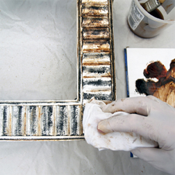
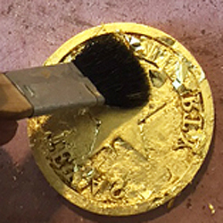
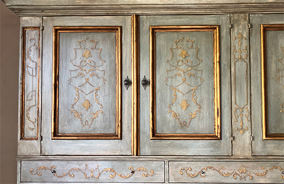
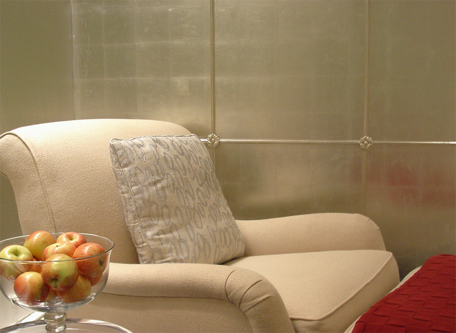
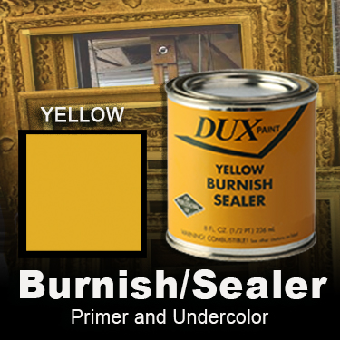
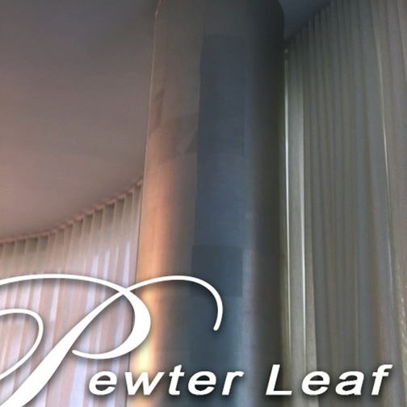
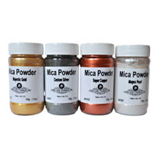

This step-by-step tutorials uses 2 antiquing processes, physical distressing and the use of an antique glaze, to create the soft, aged patin of antiqued silver. Antiquing is the process of aging a surface to produce a time-worn appearance.
Finest quality natural hair brushes for the beginner to the pro.
What's your project? You may be working on canvas, or paper, or glass, or maybe clay? Our natural hair brushes include Sable, Badger, and a variety of Squirrel, Goat and Bristle options. You'll find great options for lettering and lining, flat mops for washing on color, or dusting gold leaf. Finely crafted in the US, Europe and Asia. Artist Quills - Lettering brushes - Fine Sable - Gesso Stippling - Flat Wash - Gilding Mops - Decorative Paint and Faux Brushes

Featured Product Ideally suited for exterior applications.
Professional Gilding Kit - 23kt Gold Leaf. Each kit contains: Basic step-by-step instructions, one book 23kt Gold Leaf book (Patent leaf) one 4 oz. bottle of yellow/ochre oil based Gilding Primer, natural hair brush, one 4 oz jar of oil based gilding size, one 4 oz Acrylic Top Coat Sealer, cotton and mixing sticks, wet/dry paper and book of leaf. Solvent-based. Each Gold leaf book contains 25 leaves. Each leaf is 3 3/8" x 3 3/8" square. Approx coverage is 1.7 sqft.
UPS Ground shipment only.
Learn more and purchase Gold Leaf Kits.
BUY NOWIdeally suited for exterior applications.
Professional Gilding Kit - 23kt Gold Leaf. Each kit contains: Basic step-by-step instructions, one book 23kt Gold Leaf book (Patent leaf) one 4 oz. bottle of yellow/ochre oil based Gilding Primer, natural hair brush, one 4 oz jar of

Available in various sizes, these mop brushes are for 'burnishing', or 'cleaning off' gold and metal leaf skewings and overlap pieces. Mops are most often used to dust skewings from oil size and waterbased size, gilded surface.

Beautiful, translucent, natural Abalone, specially prepared in sheets 5½" x 9½". This is the highest grade Abalone available to the sign artist for that special letter center or accent.
Abalone veneers are made from thinly sliced pieces of shell, glued together and sanded flat to form continuous sheets. The material is mainly used for surface overlays and inlays.

This process imitates the appearance of individual pieces of wood inlayed as a border to a wooden floor. a variety of patterns can be created, often imitating an assortment of wood types such as mahogany, oak, pine, ebony and maple. I’ve found this treatment to be a successful method of creating a period feel within a range of styles. And since there are very few design limitations you can create wonderfully unique floors to fit your style.
Learn about painted inlay techniques

Antiquing Gold Leaf
Adding the finishing touches to your gilt surface, whether Genuine Gold Leaf or Composition, imitation gold leaf, requires just the right know-how. And artSparx delivers the expertise to give your project that extra glow.

Gilding Walls. Applying Genuine Gold leaf or Metal leaf to walls or ceilings can create a striking feature in any interior. Ribbon Leaf can help get the job done quickly and with more precision. Learn more and purchase Ribbon Leaf now.
more gilding products and techniques

OCHRE Burnish/Sealer
Burnish Sealer Priming Undercoat - ideal for Gold and imitation gold. A solvent based (oil based) primer-sealer for use with LeFranc and Dux gilder's sizing, as well as all water-based sizing..

Pewter is a metal with a grey/silver appearance. It is made by mixing tin and antimony (originally tin and lead). Pewter is often used to make ornaments or containers for eating and drinking.
Sold in books of 100 leaves,or packs of 500 leaves. Each leaf is 5 1/2" x 5 1/2" square. Approx. coverage is 100 sqft. Available as Loose Leaf.

Gilding supplies for the beginner, intermediate and advanced gilder.
Gold leaf supplies Education and training for the gilding arts. At artSparx we take gilding seriously. Genuine Gold, Silver or metal leaf and a full product line of adhesives, sealers, brushes and tools. Get started now!

The northern Italian region of Tuscany offers visitors an overwhelming experience for the senses, with the sounds of its music, the smells of its cooking and the visual richness of its distinctive style.

Polished Plaster, or Stucco Veneziano, is a Traditional wall treatment that provides a glossy, visually textured wall finish. Venetian Plaster is a natural formula composed of organic ingredients, calcium, and acrylic binders creating a decorative paste plaster for interior applications. Polishing the surface compresses the calcium within the compound, creating a narble-like finish, cool and hard to the touch.
This treatment is quite versitile, ranging from a rustic backdrop to a refined and elegant finish.
Highlight your decorative project with these high quality mica powders.

Mica Powder. - Perfect for artists and craftsmen alike, these powders have many uses and mix with clear vehicles ranging from acrylic and oil based mediums to shellac. You control the pigment content - use very little for a translucent veil of metallic or use more for a solid metal look. Intermix colors to create your own mica palette. Ideal for 'Flash Gilding', where you apply the mica directly over size that is at perfect tack.

Gilding Objects
There are a few different methods for applying leaf, each providing a variety of final looks, depending on what your finished goal will be. Here we outline the 'Oil gilding' method, using an oil size adhesive. Additionally, the 'water based gilding' method provides an alternative approach. Choosing the right method for you depends on your object, your skill level and the final look of the object being gilt.
An artSparx.com tutorial